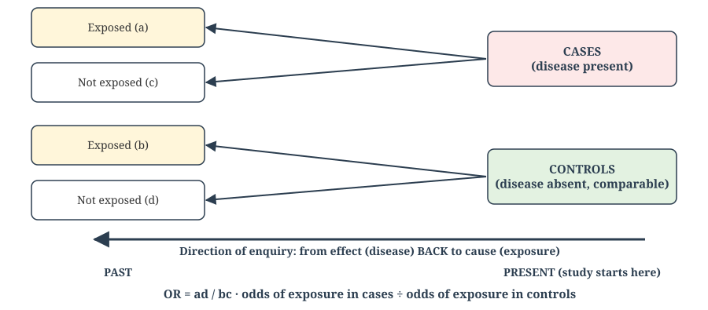
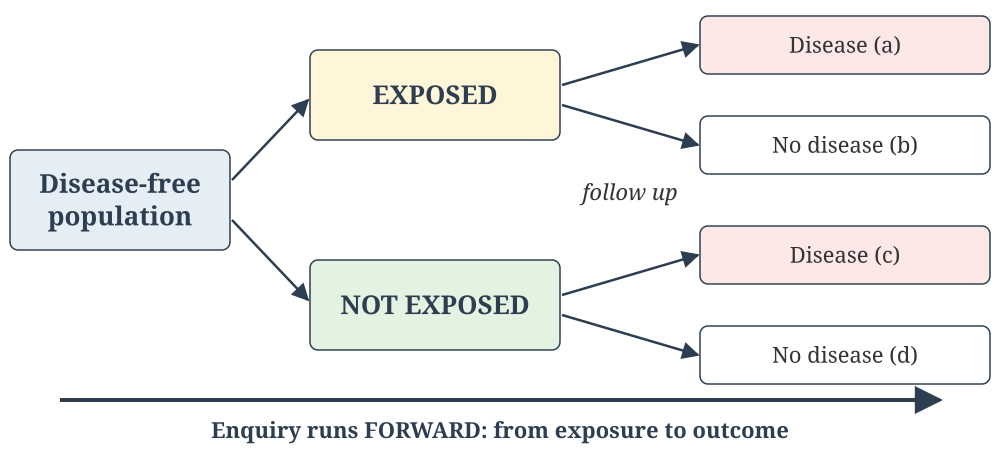
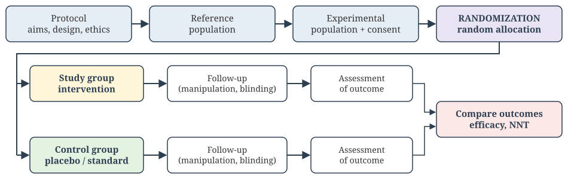
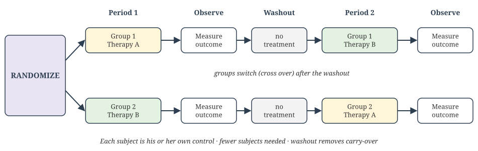
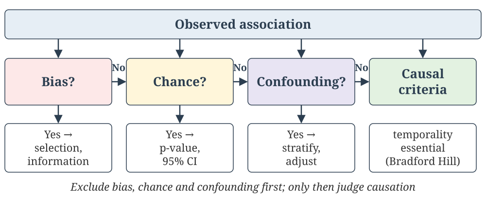

Case-Control, Cohort and Experimental Studies; Association, Causation, and Bias
Welcome
Epidemiologic Methods
Learning Objectives (CM7 Lectures 6–9):
Describe the design, steps, analysis (OR), biases, advantages and limitations of a case-control study
Describe the types and elements of cohort studies; calculate RR, AR, AR% and PAR
Outline the steps and types of randomized controlled trials; explain randomization and blinding; calculate vaccine efficacy and NNT
Distinguish association from causation; identify bias, chance and confounding; apply causal criteria; distinguish validity from reliability
NMC Community Medicine Code: CM7.5, CM7.8
🟢 MUST KNOW · 🟡 SHOULD KNOW · 🟣 MAY KNOW · 🧡 QUESTION
Lecture 6: Case-Control Study
📚 Lecture 6 of 15 · CM7.L6
Case-control study
The 2×2 Table
🟢 MUST KNOW
Every analytical comparison starts from a 2×2 table of exposure against outcome:
Disease + (cases)
Disease − (controls)
Exposed
a
b
Unexposed
c
d
Case-control: the column totals (a+c cases, b+d controls) are fixed by the investigator
Cohort: the row totals (a+b exposed, c+d unexposed) are fixed
Relative risk, odds ratio and attributable risk are all calculated from these four cells.
Case-Control Study
🟢 MUST KNOW

Case-control design
OR = ad / bc. It proceeds from effect to cause (retrospective). Exposure is always measured after the disease has occurred. It is also called a “trohoc” study (“cohort” spelt backwards).
Basic Steps of a Case-Control Study
🟢 MUST KNOW
Selection of cases and controls
Cases: a clear diagnostic definition. Incident cases are preferred to prevalent ones. Sources are hospitals or the general population.
Controls: free of the disease, similar to cases in everything except the disease. Sources are hospital, relatives/neighbourhood, or the general population.
Matching: on confounders such as age and sex (next slide)
Measurement of exposure: the same method for cases and controls (interview, records), with blinding where possible
Analysis: exposure rates among cases and controls, then the odds ratio
OR = (a × d) ÷ (b × c)
Rare-disease assumption: when the disease is uncommon, OR ≈ RR.
Case Scenario: Planning a Breast Cancer Study
🧡 CASE SCENARIO
You plan a case-control study to test whether women with a family history of breast cancer have a higher risk of breast cancer.
How will you select the cases and the controls? Can controls come from the same family?
How will you measure family history, and what information biases may occur?
How will you measure association, test significance, and deal with confounders?
Case Scenario: Planning a Breast Cancer Study, Discussion
🧡 CASE SCENARIO: DISCUSSION
Cases: newly diagnosed, from a cancer hospital or registry. Controls: women from the same catchment population, matched on age, age at first pregnancy, parity and breastfeeding. Not relatives: that would over-match on the exposure itself.
Measure family history by structured interview of cases and controls. Recall bias (cases remember family cancers better) and observer bias are possible. Blind the interviewer to case status.
Use the odds ratio with a 95% CI and the chi-square test. Control confounders by matching at design, and Mantel–Haenszel stratified analysis or logistic regression at analysis.
Matching in Case-Control Studies
🟡 SHOULD KNOW
Matching selects controls so that a potential confounder (e.g. age, occupation) has the same distribution in cases and controls.
Group (frequency) matching: the matched variable has a similar distribution in both groups
Pair (individual) matching: each case is paired with a control sharing that characteristic, e.g. a 50-year-old mason case and a 50-year-old mason control
Critical rule: never match on the exposure you want to study. That forces cases and controls to look alike on it and erases its association with disease. Over-matching also makes controls harder to find and can bias the OR toward 1.
Worked Example: Odds Ratio
🟢 MUST KNOW
A study of tobacco chewing and oral cancer (100 cases, 100 controls):
Oral cancer (cases)
No oral cancer (controls)
Chewers
a = 80
b = 40
Non-chewers
c = 20
d = 60
Total
100
100
Exposure in cases = 80% and in controls = 40%
OR = (80 × 60) ÷ (40 × 20) = 6.0
Interpretation: cases had six times the odds of having chewed tobacco compared with controls. Oral cancer is rare, so tobacco chewers have roughly six times the risk.
Case Scenario: Helmets and Fatal Head Injury
🧡 CASE SCENARIO
Among two-wheeler accident victims, 87 had fatal and 113 non-fatal head injuries. Of the fatal cases, 55 had not worn a helmet; of the non-fatal, 45 had not.
Build the 2 × 2 table (cases = fatal injury, exposure = no helmet).
Calculate the odds ratio and the etiological fraction.
Interpret the result.
Case Scenario: Helmets and Fatal Head Injury, Discussion
🧡 CASE SCENARIO: DISCUSSION
a = 55, b = 45, c = 32, d = 68
OR = (55 × 68) ÷ (45 × 32) = 3,740 ÷ 1,440 ≈ 2.6
EF = (OR − 1) ÷ OR ≈ 61%
Riders without helmets had about 2.6 times the odds of a fatal head injury. About 61% of fatal head injuries among non-users could be prevented by helmet use.
(The textbook prints OR 1.22 and EF 18%, which is an arithmetic error.)
Bias in Case-Control Studies
🟡 SHOULD KNOW
Bias
What happens
Selection bias
Cases and controls are selected in a way related to exposure
Berkson’s bias
A hospital-based study is distorted by different admission rates for different combinations of disease and exposure
Recall (memory) bias
Cases search their memory harder for past exposures than controls
Interviewer bias
An interviewer who knows case status probes cases more intensively
Neyman (prevalence–incidence, survivorship) bias
Using prevalent cases misses those who died early or recovered (e.g. fatal MI)
Confounding
A third factor linked to both exposure and disease, controlled by matching or analysis
Case-Control Study: Advantages and Limitations
🟢 MUST KNOW
Advantages
Quick, cheap, needs few subjects
Best design for rare diseases and those with long latency
No risk to subjects; no attrition
Can study several exposures for one disease
Gives an estimate of RR (via the OR)
Limitations
Prone to recall and selection bias
Incidence and true RR cannot be measured
Temporality is sometimes unclear
Choosing an appropriate control group is difficult
Only one outcome is studied
Not suitable for rare exposures
Nested Case-Control Study
🟡 SHOULD KNOW
A case-control study conducted within an existing cohort. Once enough cases accumulate in a large prospective cohort, controls are sampled from the cohort’s non-cases rather than processing exposure data for everyone.
More efficient than analysing the full cohort, because exposure data (e.g. stored blood) are processed only for cases and the sampled controls
Both groups come from the same defined cohort, and exposure was recorded before disease. This minimizes selection and recall bias.
Practice Questions: Descriptive (Lecture 6)
For written practice — work through these on paper; no auto-check for this slide.
Long Essay
Define epidemiology. What is a case-control study? Describe the basic stages (framework for analysis), and mention the advantages and limitations of case-control studies.
Short Essay / Short Answer
Discuss the types of bias in case-control studies.
Write the advantages and disadvantages of case-control studies.
Explain the difference between a case-control study and a cohort study.
Short Notes
Odds ratio.
Practice Questions: Descriptive (Lecture 6, contd.)
Reasoning Type
Explain why the odds ratio is used instead of relative risk in case-control studies.
Why does rarity of disease allow the odds ratio to approximate relative risk?
Case Scenario
You are planning a case-control study to test whether women with a family history of breast cancer have a higher risk of breast cancer.
How will you select the cases?
How will you select the controls? Can you take controls from the same family?
How will you measure family history of breast cancer?
What measurement (information) biases may occur in this study?
How will you measure the strength of association, and which test of significance will you apply?
How will you deal with confounding variables?
Practice Questions: Descriptive (Lecture 6, contd.)
Numerical
In a case-control study of helmet use, 55 of 87 fatal and 45 of 113 non-fatal head-injury cases had not used helmets (cases = fatal injury). Calculate the odds ratio and the etiological fraction, and interpret them.
University Examination Questions
Define epidemiology. List the various epidemiological study designs. Briefly discuss the steps in a case-control study.
Classify epidemiological studies. Write the steps for conducting a case-control study.
Odds ratio.
Bias in case-control studies.
Self-Check: Question 1
🧡 QUESTION
Question 1
A study begins by identifying people with lung cancer and people without it, then looks backward at their smoking history. This is a:
Cohort study
Case-control study
Randomized controlled trial
Ecological study
Self-Check: Question 2
🧡 QUESTION
Question 2
A researcher wants to study the association between smoking and lung cancer using past hospital records of cases and controls. The most appropriate study design is a:
Cohort study
Randomized controlled trial
Cross-sectional study
Case-control study
Self-Check: Question 3
🧡 QUESTION
Question 3
In a case-control study, the association is most appropriately measured by the:
Relative risk
Attributable risk
Odds ratio
Incidence rate ratio only
Self-Check: Question 4
🧡 QUESTION
Question 4
Which of the following is known as the “cross-product ratio”?
RR
AR
PAR%
OR
Self-Check: Question 5
🧡 QUESTION
Question 5
A case-control study finds an odds ratio of 5.0 between exposure and disease. The best interpretation is:
Cases have five times higher odds of having had the exposure compared with controls
The exposed have five times higher incidence, directly measured
The exposure is definitely causal without further assessment
The disease prevalence is 5%
Self-Check: Question 6
🧡 QUESTION
Question 6
Selection bias in a case-control study most commonly occurs when:
Selection of cases and controls is related to exposure status
Exposure is measured with high accuracy
Outcome status is confirmed objectively
Sample size is sufficiently large
Self-Check: Question 7
🧡 QUESTION
Question 7
An epidemiologist wants to study whether blood group “O” protects against peptic ulcer disease compared with the other three blood groups. The outcome variable in this case is:
Blood groups
Peptic ulcer disease
Both of these
None of these
Self-Check: Question 8
🧡 QUESTION
Question 8
Assertion (A): Recall bias is commonly seen in cohort studies.
Reason (R): Recall bias mainly affects studies where past exposure is assessed after disease occurrence.
Both A and R are true, and R is the correct explanation of A
Both A and R are true, but R is NOT the correct explanation of A
A is true, R is false
A is false, R is true
Self-Check: Question 9
🧡 QUESTION
Question 9
In a case-control study of oral cancer, 80 of 100 cases and 40 of 100 controls chewed tobacco. The odds ratio is:
2.0
4.0
6.0
8.0
Self-Check: Question 10
🧡 QUESTION
Question 10
In a standard 2 × 2 table, the odds ratio is measured as:
(a × b)/(c × d)
(a × d)/(b × c)
(a × c)/(b × d)
None of these
Self-Check: Question 11
🧡 QUESTION
Question 11
Which of the following is the biggest problem in the conduct of case-control studies?
Logistic efforts
Large number of subjects
Loss to follow-up
Selection of appropriate controls
Self-Check: Question 12
🧡 QUESTION
Question 12
Which of the following is correct about case-control studies?
Incidence can be calculated
They are good for studying risk factors of rare diseases
Relative risk can be calculated
They take a long time
Self-Check: Question 13
🧡 QUESTION
Question 13
A case-control study is also known as a:
Biased study
Cross-sectional study
Hill’s study
Trohoc study
Self-Check: Question 14
🧡 QUESTION
Question 14
Which of the following is correct for a case-control study?
Two groups with neither exposure nor outcome are followed for a defined period for development of outcome
Two comparable groups, one with the outcome and the other without, are taken and the history of exposure is obtained from both
A single group is studied for exposure and outcome at one point in time
A group with exposure but not the disease is followed for a defined period
Self-Check: Question 15
🧡 QUESTION
Question 15
What is the measure of effect calculated in a case-control study?
RR
OR
Prevalence
All of these
Self-Check: Question 16
🧡 QUESTION
Question 16
A case-control study:
Is always retrospective
Is always prospective
Can be retrospective or prospective
Gives us the prevalence of the disease
Self-Check: Question 17
🧡 QUESTION
Question 17
Which of the following is NOT an advantage of case-control studies?
They are much less expensive
They require little time to complete
They have minimal recall bias
They are good for studying risk factors of a rare disease
Self-Check: Question 18
🧡 QUESTION
Question 18
A case-control study is one in which the epidemiologist starts with two comparable groups of subjects, of which:
One has the exposure and the other does not
One has the outcome and the other does not
Both groups have the outcome
Both groups have the exposure
Self-Check: Question 19
🧡 QUESTION
Question 19
For the OR to be a valid estimator of risk in a case-control study, which of the following are essential?
The outcome (disease) should be rare in the population
Controls should come from the same source as the cases
Both of these
None of these
Self-Check: Question 20
🧡 QUESTION
Question 20
In a case-control study, survivorship (Neyman, prevalence–incidence) bias is most likely for which of the following diseases?
Institutional normal delivery
Coryza
Myocardial infarction
Colles fracture sustained while playing sports
Self-Check: Question 21
🧡 QUESTION
Question 21
Of 100 two-wheeler accident victims who did not use helmets, 55 had fatal and 45 non-fatal head injuries. Of 100 who used helmets, 32 had fatal and 68 non-fatal head injuries. The odds ratio for fatal head injury with non-use of helmets is about:
1.22
1.72
2.6
3.9
Lecture 7: Cohort Study
📚 Lecture 7 of 15 · CM7.L7
Cohort study
Cohort Study
🟢 MUST KNOW

Cohort design
Cohort = a group of people who share a common characteristic or experience within a defined period. The study proceeds from cause to effect (prospective, longitudinal or incidence study).
Types of Cohort Study
🟢 MUST KNOW
Type
Exposure
Outcome
Example
Prospective (concurrent)
Measured now
Occurs in the future, after follow-up
Framingham Heart Study (1948–)
Retrospective (historical)
From past records
Already occurred when the study begins
Occupational records → cancer deaths
Ambispective (combination)
From past records
Follow-up continues into the future
Historical cohort extended forward
In every type, the logic runs from exposure to outcome. Only the investigator’s position in calendar time differs.
Elements of a Cohort Study
🟢 MUST KNOW
Selection of study subjects: a general population or special groups (professional groups, exposure groups), free of the disease at the start
Obtaining data on exposure: from the cohort members, records, examinations and environmental surveys
Selection of comparison groups:
internal: different exposure levels within one cohort
external: a separate unexposed cohort
general population rates
Follow-up: periodic examination, records and death certificates. Loss to follow-up must be minimal, because differential losses cause selection bias.
Analysis: incidence in the exposed and unexposed, then RR and AR
Biases in Cohort Studies
🟡 SHOULD KNOW
Loss to follow-up (attrition) bias: subjects drop out, die or migrate. It is serious when those lost differ systematically in outcome. Prevent it by explaining the study well, recording contact details of participants and relatives, keeping in regular touch, and tracing drop-outs quickly.
Measurement (information) bias: exposed and unexposed cohorts are examined differently for the outcome. For example, alcoholics visit health facilities more often, so GERD is diagnosed more often in them. Prevent it with identical follow-up and assessment methods, ideally blinded.
Confounding: controlled by matching, restriction or analysis.
Bias that does NOT occur:recall bias. Exposure is measured objectively at the start, not recalled after the disease.
Measures in a Cohort Study: Worked Example
🟢 MUST KNOW
Lung cancer over 10 years in 10,000 smokers and 10,000 non-smokers:
Lung cancer
No lung cancer
Total
Incidence
Smokers
280
9,720
10,000
Iₑ = 28 per 1000
Non-smokers
40
9,960
10,000
I₀ = 4 per 1000
RR = Iₑ ÷ I₀ = 28 ÷ 4 = 7: smokers have 7 times the risk
AR = Iₑ − I₀ = 24 per 1000: the excess risk due to smoking
AR% = (Iₑ − I₀) ÷ Iₑ × 100 = 86% of smokers’ lung cancer is preventable by not smoking
Case Scenario: Tobacco Use in Pregnancy
🧡 CASE SCENARIO
300 antenatal women were examined: 100 tobacco users and 200 non-users. All were followed until delivery. Low birth weight occurred in 20 users and 20 non-users.
What type of comparison cohort is this?
Calculate the RR, AR and AR%.
Interpret the results.
Case Scenario: Tobacco Use in Pregnancy, Discussion
🧡 CASE SCENARIO: DISCUSSION
An internal (inbuilt) comparison group: both groups come from the same examined population
Iₑ = 20 ÷ 100 = 20%; I₀ = 20 ÷ 200 = 10%
RR = 2. AR = 10 per 100 births. AR% = (20 − 10) ÷ 20 = 50%
Tobacco users have twice the risk of an LBW baby. Half of the LBW among users is attributable to tobacco and preventable by quitting.
Attributable Risk
🟢 MUST KNOW
Attributable Risk (AR) is the excess risk in the exposed group that is due to the exposure, i.e. the risk difference:
AR = Iₑ − I₀ · AR% = (Iₑ − I₀) ÷ Iₑ × 100
Population Attributable Risk (PAR) is the excess risk in the total population due to the exposure:
RR tells you the strength of an association, which is useful for causal inference
AR / AR% tell you the impact on the exposed
PAR% tells you the impact on the whole community, which is what programme planners use
Cohort vs. Case-Control
🟢 MUST KNOW
Cohort
Case-control
Starts from
Exposure status
Disease status
Direction
Cause → effect (forward)
Effect → cause (backward)
Best for
Rare exposures, several outcomes
Rare diseases, several exposures
Measure
Incidence, RR, AR
Odds ratio only
Size, cost, time
Large, costly, long
Small, cheap, quick
Main biases
Loss to follow-up (attrition)
Recall bias, selection bias
Temporality
Clear
Sometimes unclear
Cohort Study: Advantages and Limitations
🟡 SHOULD KNOW
Advantages
Incidence, RR and AR can be measured directly
Temporality is clear: exposure precedes outcome
Several outcomes can be studied for one exposure
Dose–response can be studied
Little recall bias
Limitations
Large samples, long follow-up, high cost
Loss to follow-up; changes in exposure or diagnostic criteria over time
Unsuitable for rare diseases
Ethical issues when a known risk is left unaddressed
Administrative difficulties
Practice Questions: Descriptive (Lecture 7)
For written practice — work through these on paper; no auto-check for this slide.
Long Essay
Define epidemiology. Classify epidemiological study designs. Describe in detail the steps involved in a cohort study, and enumerate the advantages and disadvantages of cohort studies.
Describe a cohort study with a suitable example.
Short Essay / Short Answer
Cohort study: steps and risk measurements.
Attributable risk and population attributable risk.
Short Notes
Relative risk: definition and calculation.
Attributable risk: calculation.
Practice Questions: Descriptive (Lecture 7, contd.)
Reasoning Type
Give reasons why loss to follow-up threatens validity in cohort studies.
Numerical
Smokers and non-smokers free of lung cancer were followed for 15 years: 70 of 7,000 smokers and 3 of 3,000 non-smokers developed lung cancer. Calculate RR, AR, the etiological fraction (AR%) and PAR%, and explain what each means.
University Examination Questions
Mention two advantages of a cohort study.
Self-Check: Question 22
🧡 QUESTION
Question 22
Which measure of association can be directly calculated from a cohort study but NOT from a case-control study?
Odds Ratio
Relative Risk
p-value
Confidence interval
Self-Check: Question 23
🧡 QUESTION
Question 23
If IE is the incidence of disease in the group exposed to a risk factor and IO the incidence in the unexposed group, then IE/IO gives the:
Relative risk
Risk ratio
Both of these
None of these
Self-Check: Question 24
🧡 QUESTION
Question 24
Attributable Risk Percent (AR%) is best described as:
The strength of an association
The proportion of exposed-group risk that would be eliminated if the exposure were removed
The same value as the odds ratio
A measure usable only in RCTs
Self-Check: Question 25
🧡 QUESTION
Question 25
Annual incidence of thromboembolism per lakh women aged 30–39 is 5.3 among oral-contraceptive users and 1.8 among non-users. The RR and AR are:
RR 2.9; AR 3.5 per lakh
RR 3.5; AR 2.9 per lakh
RR 0.34; AR 3.5 per lakh
RR 2.9; AR 7.1 per lakh
Self-Check: Question 26
🧡 QUESTION
Question 26
In a cohort study, lung cancer incidence was 28 per 1000 among smokers and 4 per 1000 among non-smokers. The attributable risk percent (AR%) among smokers is about:
14%
24%
86%
700%
Self-Check: Question 27
🧡 QUESTION
Question 27
In a cohort study, loss to follow-up is higher among exposed individuals who later develop the disease. This most likely introduces:
Recall bias
Information bias
Selection bias
Confounding
Self-Check: Question 28
🧡 QUESTION
Question 28
Assertion (A): In a cohort study, incidence can be directly measured.
Reason (R): Participants are followed over time from exposure status to observe the occurrence of new outcomes.
Both A and R are true, and R is the correct explanation of A
Both A and R are true, but R is NOT the correct explanation of A
A is true, R is false
A is false, R is true
Self-Check: Question 29
🧡 QUESTION
Question 29
A study uses 1990 factory employment records to classify workers by asbestos exposure, then traces their mesothelioma occurrence up to 2025. This is a:
Prospective cohort study
Retrospective (historical) cohort study
Case-control study
Cross-sectional study
Self-Check: Question 30
🧡 QUESTION
Question 30
Loss to follow-up is likely in which of the following studies?
Case-control study
Cross-sectional analytical study
Ecological study
Cohort study
Self-Check: Question 31
🧡 QUESTION
Question 31
The measure of risk in a cohort study is:
Relative risk
Prevalence odds ratio
Exposure odds ratio
None of these
Self-Check: Question 32
🧡 QUESTION
Question 32
A cohort study can be used to study all of the following, EXCEPT:
Risk markers
Risk factors
Prognostic factors
Preventive factors
Self-Check: Question 33
🧡 QUESTION
Question 33
The direction of reasoning in a cohort study is:
Prospective
Retrospective
None of these
Both of these
Self-Check: Question 34
🧡 QUESTION
Question 34
Temporal association of a disease is best established by a:
Case-control study
Cross-sectional study
Cohort study
None of these
Self-Check: Question 35
🧡 QUESTION
Question 35
Which type of bias is NOT likely in a cohort study?
Recall bias
Loss to follow-up bias
Confounding
None of these
Self-Check: Question 36
🧡 QUESTION
Question 36
In which of the following situations should we avoid the cohort design?
Study of a suspected risk factor of a disease
Study of prognostic factors
Study of a rare disease
A study where the likely follow-up period is short
Self-Check: Question 37
🧡 QUESTION
Question 37
Which of the following is correct for a cohort study?
Two groups with neither exposure nor outcome are followed for a defined period
Two groups, one exposed and one not, both free of the outcome, are followed for a defined period
A single group is studied for exposure and outcome at one point in time
A single group with exposure but not the disease is followed for a defined period
Self-Check: Question 38
🧡 QUESTION
Question 38
300 antenatal women (100 tobacco users, 200 non-users) were followed until delivery to compare the incidence of low birth weight. The comparison cohort in this study is a(n):
Comparison with the general population
Inbuilt (internal) comparison group
Specially assembled (external) comparison cohort
None of these
Self-Check: Question 39
🧡 QUESTION
Question 39
What is the measure of effect calculated in a cohort study?
RR
OR
Prevalence
All of these
Self-Check: Question 40
🧡 QUESTION
Question 40
A cohort study:
Is always retrospective
Is always prospective
Can be retrospective or prospective
Is always cross-sectional
Self-Check: Question 41
🧡 QUESTION
Question 41
Which of the following is NOT an advantage of cohort studies?
They are much less expensive and need little time
Temporal association is certain
Recall bias is minimal
They have a strong design from the epidemiological point of view
Self-Check: Question 42
🧡 QUESTION
Question 42
A cohort study is one in which the epidemiologist starts with two comparable groups, of which:
One has the exposure and the other does not
One has the outcome and the other does not
Both groups have the outcome
None of these
Self-Check: Question 43
🧡 QUESTION
Question 43
A cohort study is NOT suitable for:
Common diseases
Rare diseases
Both of these
None of these
Self-Check: Question 44
🧡 QUESTION
Question 44
Smokers (70 lung cancers in 7,000) and non-smokers (3 in 3,000) were followed for 15 years. The relative risk and attributable risk are:
RR 10; AR 9 per 1000
RR 9; AR 10 per 1000
RR 23; AR 7.3 per 1000
RR 10; AR 90 per 1000
Self-Check: Question 45
🧡 QUESTION
Question 45
In the same smoking study (Iₑ 10, I₀ 1, total population 73/10,000 = 7.3 per 1000), the etiological fraction (AR%) and PAR% are:
90% and 86%
86% and 90%
90% and 73%
10% and 86%
Lecture 8: Experimental Studies
📚 Lecture 8 of 15 · CM7.L8
Experimental studies - randomised controlled trial and its types
Randomized Controlled Trial (RCT)
🟢 MUST KNOW

Steps of an RCT
Randomization and Blinding
🟢 MUST KNOW
Randomization (random allocation) gives every participant an equal chance of being in the study or control group.
It removes selection bias and balances known and unknown confounders, which is the “heart” of the RCT
Methods: random number tables, computer generation, block or stratified randomization, with allocation concealment
Blinding prevents bias from knowing who received what:
Type
Who does not know the allocation
Single-blind
The participant
Double-blind
The participant and the investigator/observer
Triple-blind
Participant, investigator, and the person analysing the data
A placebo makes blinding possible when the control group gets no active treatment.
Types of Randomized Controlled Trials
🟡 SHOULD KNOW
Type
Purpose / example
Clinical (therapeutic) trials
Evaluate a drug or procedure in patients
Preventive trials
Evaluate a vaccine or chemoprophylaxis in healthy people at risk
Risk-factor trials
Modify a risk factor (diet, BP) to see whether disease falls
Cessation experiments
Stop a suspected cause (e.g. smoking) and observe the effect
Trials of etiological agents
Confirm a suspected cause (e.g. retrolental fibroplasia and oxygen)
Evaluation of health services
Compare ways of delivering care (e.g. domiciliary vs sanatorium TB treatment)
By setting:field trials study healthy individuals in the community (vaccine trials). Community trials allocate whole communities (water fluoridation).
Special Trial Designs
🟡 SHOULD KNOW
Crossover trial: each subject receives both treatments in sequence (next slide)
Factorial design: two or more interventions are tested at once in all combinations (A, B, A+B, neither)
Cluster randomized trial: villages, schools or practices are randomized, not individuals
Multicentre trial: the same protocol at several sites, to reach a large sample quickly
Non-randomized trials:
uncontrolled trials: no comparison group, as in early drug trials
natural experiments: Snow’s water companies, Hiroshima
before-and-after studies: with or without a control group
Crossover Design
🟡 SHOULD KNOW

Crossover design
Advantages: each subject is their own control, so between-subject confounding is removed. The sample size is smaller. It is ethically attractive, because everyone receives both therapies.
Disadvantages: a washout period is needed to remove carry-over, which prolongs the trial. Blinding is hard if one therapy is oral and the other parenteral. It is impossible when a therapy cures the disease (e.g. antibiotics).
Phases of Clinical Trials
🟢 MUST KNOW
Phase
Subjects
Purpose
Pre-clinical
Animals, laboratory
Toxicity, pharmacology
Phase I
20–80 healthy volunteers
Safety, dose range, maximum tolerated dose (MTD), pharmacokinetics
Phase II
100–300 patients
Efficacy and side-effects at the chosen dose
Phase III
1000s of patients, often multicentre RCTs
Confirms efficacy against the standard treatment; the basis for licensing
Phase IV
The general population after marketing
Post-marketing surveillance: rare and late adverse effects, long-term effectiveness
Thalidomide (phocomelia) and rofecoxib (cardiovascular events) were withdrawn after problems surfaced in Phase IV.
Vaccine Efficacy and Number Needed to Treat
🟢 MUST KNOW
Vaccine efficacy = (Iᵤᵥ − Iᵥ) ÷ Iᵤᵥ × 100
Typhoid vaccine trial: 80/1000 cases in the placebo group and 20/1000 in the vaccinated group, so VE = (0.08 − 0.02) ÷ 0.08 = 75%
Number Needed to Treat (NNT) = 1 ÷ absolute risk difference
Drug X vs ramipril: hypertension was controlled in 91% vs 67%. The difference is 0.24, so NNT = 1 ÷ 0.24 ≈ 4. Treating 4 patients with drug X gives one extra controlled patient compared with ramipril.
The lower the NNT, the more effective the intervention. The equivalent for harm is the NNH (number needed to harm).
Case Scenario: Two Ways to Do a Bypass
🧡 CASE SCENARIO
Survival on the 10th post-operative day was 45 of 50 after CABG on cardiopulmonary bypass and 32 of 40 after off-pump (beating-heart) CABG.
Calculate the ratio of survival (efficacy, Iₑ ÷ I₀).
Calculate the NNT and explain it.
Can we conclude that on-pump surgery is better? What design would you want?
Case Scenario: Two Ways to Do a Bypass, Discussion
AR = 0.10, so NNT = 1 ÷ 0.10 = 10. Treat 10 patients on-pump instead of off-pump for one extra survivor at day 10.
Not yet. If patients were not randomized, sicker patients may have gone to one technique (selection bias, confounding). A randomized controlled trial with blinded outcome assessment is needed.
Number Needed to Treat
🟣 MAY KNOW
NNT is always tied to a comparator, an outcome and a time period, e.g. “NNT 4 over 6 months vs ramipril for BP control”
For prevention, NNTs are often large, e.g. hundreds treated for 5 years to prevent one stroke. This is still worthwhile if the treatment is cheap and safe.
NNT can only be calculated from studies that measure risks directly (cohort studies and trials), not from case-control odds ratios alone
Animal Experiments
🟣 MAY KNOW
Advantages: conditions can be controlled. Animals can be exposed to suspected agents that could never be given to humans (e.g. carcinogens). Short life spans allow multigeneration studies. Experiments reproduce disease and help test hypotheses, vaccines and drugs.
Limitations: results cannot always be extrapolated to humans because of species differences in susceptibility and metabolism. Some human diseases cannot be reproduced in animals. Ethical constraints and regulations (CPCSEA in India) apply, along with the “3Rs” (replace, reduce, refine).
Practice Questions: Descriptive (Lecture 8)
For written practice — work through these on paper; no auto-check for this slide.
Long Essay
What is a randomized controlled trial (RCT)? Enumerate the different types of randomized controlled trials. Outline the steps involved in conducting an RCT and add a note on blinding.
Short Essay / Short Answer
Write the steps involved in a randomized controlled trial (RCT).
Short Notes
Cross-over type of study design.
Blinding in randomized controlled trials.
Advantages and limitations of animal experiments.
Practice Questions: Descriptive (Lecture 8, contd.)
University Examination Questions
Describe an RCT with a suitable example.
Basic steps in conducting a randomized controlled trial.
Blinding in randomized controlled trials.
Phases of clinical trials.
Self-Check: Question 46
🧡 QUESTION
Question 46
The main strength of randomization in an RCT is that it:
Guarantees a statistically significant result
Balances known and unknown confounders between the intervention and control groups
Removes the need for a control group
Eliminates all information bias automatically
Self-Check: Question 47
🧡 QUESTION
Question 47
Another name for randomization is:
Random sampling
Random allocation
Random error
Random variable
Self-Check: Question 48
🧡 QUESTION
Question 48
Assertion (A): Confounding can be reduced by randomization in experimental studies.
Reason (R): Randomization tends to distribute known and unknown confounders equally between groups.
Both A and R are true, and R is the correct explanation of A
Both A and R are true, but R is NOT the correct explanation of A
A is true, R is false
A is false, R is true
Self-Check: Question 49
🧡 QUESTION
Question 49
In a typhoid vaccine trial, 2000 children were randomized into two groups of 1000. Over one year, 20 vaccinated and 80 placebo children developed typhoid. The vaccine efficacy is:
25%
60%
75%
80%
Self-Check: Question 50
🧡 QUESTION
Question 50
Hypertension was controlled in 91% of patients given new drug X and in 67% of patients given ramipril. The number needed to treat (NNT) is about:
2
4
24
58
Self-Check: Question 51
🧡 QUESTION
Question 51
In a triple-blind trial, the group assignment is concealed from the:
Participants only
Participants and the investigator assessing outcomes
Participants, the investigators, and the person analysing the data
Ethics committee
Self-Check: Question 52
🧡 QUESTION
Question 52
In a crossover trial:
Each participant receives both treatments in sequence, separated by a washout period
Whole villages are randomized rather than individuals
Two interventions are tested simultaneously in all combinations
Patients who fail on one drug are switched to the other at the doctor’s discretion
Self-Check: Question 53
🧡 QUESTION
Question 53
A trial in which whole communities, rather than individuals, receive the intervention (e.g. water fluoridation) is a:
Clinical trial
Field trial
Community trial
Crossover trial
Self-Check: Question 54
🧡 QUESTION
Question 54
In which of the following studies is randomization done?
Case-control study
Cohort study
Experimental study
Cross-sectional study
Self-Check: Question 55
🧡 QUESTION
Question 55
Which is the ideal (most scientific) design for an epidemiological study?
Case-control study
Cohort study
Experimental study
Cross-sectional study
Self-Check: Question 56
🧡 QUESTION
Question 56
An experimental study can be used in all of the following settings, EXCEPT:
Study of risk factors
Efficacy of preventive procedures
Efficacy of treatment procedures
Evaluation of health services
Self-Check: Question 57
🧡 QUESTION
Question 57
An experimental study cannot be used to study:
Risk factors for a disease
Prognostic factors for a disease
Both of these
It can be used to study both
Self-Check: Question 58
🧡 QUESTION
Question 58
Phase IV of a clinical trial is:
Post-marketing surveillance
Clinical trial
Animal studies
None of these
Self-Check: Question 59
🧡 QUESTION
Question 59
Rofecoxib, a widely used NSAID for rheumatoid arthritis, was withdrawn after reports of adverse cardiovascular effects. This is an example of:
Assessment of adverse effects at MTD
Assessment of MTD
A classical randomized controlled trial
Phase IV of a clinical trial
Self-Check: Question 60
🧡 QUESTION
Question 60
The withdrawal of thalidomide from the market was an example of which phase of clinical trial?
Phase I
Phase II
Phase III
Phase IV
Self-Check: Question 61
🧡 QUESTION
Question 61
A cessation experiment is a type of:
Cohort study
Experimental study
Case-control study
Cross-sectional study
Self-Check: Question 62
🧡 QUESTION
Question 62
In single blinding, who is unaware of the type of treatment being given?
Analyser
Observer
Subject
All of these
Self-Check: Question 63
🧡 QUESTION
Question 63
What is the tool for control of confounding in an experimental design?
Blinding
Statistical analysis
Randomization
None of these
Self-Check: Question 64
🧡 QUESTION
Question 64
In an experimental study, before randomization, the epidemiologist will remove:
All those who already have the exposure
All those who already have the outcome
Both of these
None of these
Self-Check: Question 65
🧡 QUESTION
Question 65
In which experimental study is a group of subjects randomized instead of individual subjects?
Clinical trial
Preventive trial
Cessation experiment
Community intervention trial
Self-Check: Question 66
🧡 QUESTION
Question 66
Imipenem results in ICU septicaemia patients were compared with earlier data from when imipenem was unavailable and cefotaxime was used. This is an example of:
Randomized controlled trial
Phase I clinical trial
Quasi-experimental design
Crossover design
Self-Check: Question 67
🧡 QUESTION
Question 67
Survival on the 10th post-operative day was 45/50 (90%) after CABG on cardiopulmonary bypass and 32/40 (80%) after off-pump CABG. The efficacy (Iₑ/I₀) of CABG with CPB is:
1.00
1.13
0.88
1.45
Self-Check: Question 68
🧡 QUESTION
Question 68
In the same CABG comparison, the number needed to treat (NNT) is:
2
5
10
12
Lecture 9: Association, Causation, and Bias
📚 Lecture 9 of 15 · CM7.L9
Association, causation and bias in epidemiological studies
From Association to Causation
🟢 MUST KNOW

Evaluating an association for causation
Types of Association
🟢 MUST KNOW
Type
What it means
Spurious
An artefact of bias, from comparing groups that were never “like with like”. It is prevented by proper design: comparable groups, randomization, standardized measurement.
Indirect
Exposure and disease are each linked to a separate third factor, with no direct link between them (e.g. altitude and endemic goitre, both tracking iodine-poor terrain)
Direct (causal), one-to-one
A change in the exposure directly produces a change in disease: the single-cause model behind Koch’s postulates
Direct (causal), multifactorial
Several causes act independently or cumulatively/synergistically (coronary heart disease)
Rule of thumb: correlation can suggest causation, but never proves it on its own.
Chance and Statistical Significance
🟡 SHOULD KNOW
Any observed association may arise by chance (random error), especially in small samples
The p-value is the probability of a result at least this extreme if there were truly no association. Conventionally, p < 0.05 counts as statistically significant.
The 95% confidence interval is the range likely to contain the true RR or OR. If it excludes 1, the association is significant, and a narrow CI means a precise estimate.
Random error is reduced by increasing sample size. Systematic error (bias) is not.
Occurs when the people selected into (or retained in) a study are not representative of the population they should reflect, in a way related to exposure or outcome.
Examples: volunteer bias, Berkson’s (hospital admission) bias, the healthy worker effect, differential loss to follow-up in cohorts, and non-response
It must be prevented at the design stage. It generally cannot be fixed by statistical adjustment afterwards.
Information Bias
🟡 SHOULD KNOW
Arises from inaccurate measurement or classification of exposure or outcome (misclassification):
Recall (memory) bias: cases remember or report past exposures differently from controls
Interviewer (observer) bias: data are collected differently depending on group membership
Hawthorne effect: subjects change their behaviour because they know they are being observed
Instrument or technique errors: an uncalibrated sphygmomanometer, no rest before a BP reading
It is best prevented by blinding, standardized instruments and protocols, and objective records.
Confounding
🟢 MUST KNOW
A confounder is a third factor that is:
Associated with the exposure
An independent risk factor for the outcome
Not an intermediate step on the causal pathway
Example: age confounds grey hair and heart disease. Older people have more of both, with no causal link between them. Alcohol and lung cancer are confounded by smoking.
Validity (accuracy): measures what it is meant to measure. Internal validity means the results are true for the study subjects (free of bias, systematic error and misclassification). External validity means they generalize to the reference population.
Reliability (precision, repeatability, reproducibility, consistency): gives the same result on repetition. A test can be reliable but not valid.
Source of variation
Example
Intra-subject (biological)
BP varies through the day; basal temperature rises at ovulation
Inter-subject
True differences between people, which is what we want to measure
Intra-observer
The same doctor reads the same X-ray differently on two occasions
Inter-observer
Two radiologists disagree on the same CT scan
Instrument / technique
Uncalibrated scale, wrong cuff size, no rest period
Standardizing instruments and technique reduces observer, instrument and technique variation, but not true inter-subject differences.
Causal Criteria (Bradford Hill, 1965)
🟢 MUST KNOW
Criterion
Meaning
Temporality
The cause precedes the effect. This is the only essential criterion.
Strength
A larger RR or OR is more likely to be causal
Consistency
Repeated in different studies, places and designs
Specificity
One cause, one effect (weak for multifactorial disease)
Biological gradient
Dose–response
Plausibility · Coherence
Fits current biological knowledge and the natural history
Experiment
Removing the exposure reduces the disease
Analogy
Similar causes produce similar effects
Temporality is necessary but not sufficient. Detailed discussion with Koch’s postulates is in Chapter 2.
Ecological Fallacy — A Closer Look
🟣 MAY KNOW
The ecological fallacy is the error of assuming that a correlation seen at the group or population level must also hold for individuals. A classic teaching example: countries with higher average chocolate consumption have more Nobel laureates per capita. That national-level association says nothing about whether any individual who eats more chocolate is more likely to win a Nobel Prize.
Practice Questions: Descriptive (Lecture 9)
For written practice — work through these on paper; no auto-check for this slide.
Short Essay / Short Answer
Explain confounding with one epidemiological example and its control methods.
Discuss the concept of causal inference and the role of temporality.
Different types of association.
What is spurious association? How can it be prevented during research studies?
Short Notes
Spurious association.
Bradford Hill criteria of causation.
Practice Questions: Descriptive (Lecture 9, contd.)
Reasoning Type
Justify why temporality is considered a mandatory criterion for causation.
Explain how confounding can distort an observed exposure–disease association.
University Examination Questions
What is bias?
Confounding factors in epidemiological studies (research).
Self-Check: Question 69
🧡 QUESTION
Question 69
“Confounding” is best described as:
Error due to random variation in small samples
Distortion of an observed association by a third related factor
Misclassification of disease status
Elimination of error by increasing sample size
Self-Check: Question 70
🧡 QUESTION
Question 70
Which of the following is NOT an essential characteristic of a confounding variable?
It should lie in the direct chain of causation between exposure and outcome
It should be related to the exposure variable
It should be related to the outcome variable, independent of its relationship with the exposure
It should be differentially distributed between the groups
Self-Check: Question 71
🧡 QUESTION
Question 71
Which of the following is NOT a method of controlling confounding?
Restriction
Matching
Stratified analysis
Ensuring use of accurate instruments
Self-Check: Question 72
🧡 QUESTION
Question 72
Which method can be used to control confounding during the statistical analysis stage, after data collection is complete?
Randomization
Matching
Restriction
Stratified analysis
Self-Check: Question 73
🧡 QUESTION
Question 73
Which type of bias or distortion CAN typically still be corrected during data analysis, after the study has been conducted?
Selection bias
Recall bias
Confounding
Interviewer bias
Self-Check: Question 74
🧡 QUESTION
Question 74
Gender CANNOT be a confounding variable in a study exploring the association between:
Tobacco smoking and lung cancer
Viral infections and diabetes mellitus
Use of talcum powder and ovarian cancer
Habitual physical exercise and IHD
Self-Check: Question 75
🧡 QUESTION
Question 75
Confounding is a form of which of the following errors?
Lack of internal validity (bias)
Lack of external validity
Lack of statistical precision
Lack of repeatability
Self-Check: Question 76
🧡 QUESTION
Question 76
Another name for “lack of internal validity” is:
Bias
Systematic error
Misclassification
All of these
Self-Check: Question 77
🧡 QUESTION
Question 77
Bias can be of which of the following types?
Selection bias
Measurement bias
Both of these
None of these
Self-Check: Question 78
🧡 QUESTION
Question 78
In assessing a cause-and-effect relationship, we exclude the role of certain factors and then evaluate the relationship against causal criteria. The correct sequence is:
Bias, chance, confounding, criteria of causal association
Chance, confounding, bias, criteria of causal association
Criteria of causal association, bias, confounding, chance
Confounding, chance, bias, criteria of causal association
Self-Check: Question 79
🧡 QUESTION
Question 79
In assessing whether a cause-and-effect relationship exists between an exposure and an outcome, we ascertain that:
There is no bias
There is a statistically significant association
There is no confounding
All of these
Self-Check: Question 80
🧡 QUESTION
Question 80
A key criterion supporting causation rather than mere association is:
Large p-value
Temporality (exposure precedes outcome)
Availability of expensive laboratory tests
Equal prevalence in exposed and unexposed
Self-Check: Question 81
🧡 QUESTION
Question 81
The essential condition that must be satisfied before considering a causal relationship is:
Biological plausibility
Strength of association
Temporality
Consistency
Self-Check: Question 82
🧡 QUESTION
Question 82
The statement “the higher the relative risk, the more likely the association is causal” reflects which criterion of causal association?
Temporality
Strength of association
Consistency
Biological plausibility
Self-Check: Question 83
🧡 QUESTION
Question 83
A high odds ratio in a case-control study always indicates:
Causation
Strong association
Absence of bias
High incidence
Self-Check: Question 84
🧡 QUESTION (select ALL that apply)
Question 84
Criteria often discussed in causal inference include:
Temporality
Biological plausibility
Absence of any bias in all studies
Consistency across studies
Self-Check: Question 85
🧡 QUESTION
Question 85
Assertion (A): Temporality is an essential criterion for concluding causation.
Reason (R): If exposure precedes disease, the relationship must be causal.
Both A and R are true, and R is the correct explanation of A
Both A and R are true, but R is NOT the correct explanation of A
A is true, R is false
A is false, R is true
Self-Check: Question 86
🧡 QUESTION
Question 86
Measuring a patient’s BP immediately after they have climbed 50 stairs to reach the clinic will result in:
Error of basic measurement
Bias
Confounding
All of these
Self-Check: Question 87
🧡 QUESTION
Question 87
In a hypertension survey, young men walked 2 km from the parking lot and their BP was measured immediately on arrival, without rest. This will adversely affect the:
Validity
Reliability
Precision
Will not adversely affect anything
Self-Check: Question 88
🧡 QUESTION
Question 88
The ability of a measurement process to give consistent results when repeated is called:
Reliability
Replicability
Consistency
All of these
Self-Check: Question 89
🧡 QUESTION
Question 89
The ability of a measurement process to correctly measure what it actually intends to measure is known as:
Reliability
Reproducibility
Validity
Consistency
Self-Check: Question 90
🧡 QUESTION
Question 90
A CT scan of an unconscious patient’s brain was read independently by two radiologists. One reported a mild left subthalamic bleed and the other reported it as normal. This is a situation of:
Subject-related variation
Instrument-related variation
Interobserver variation
Technique-related variation
Self-Check: Question 91
🧡 QUESTION
Question 91
In women, body temperature taken immediately on waking is higher at the time of ovulation. This is an example of:
Intrasubject variation
Intersubject variation
Circadian variation
Observer variation
Self-Check: Question 92
🧡 QUESTION
Question 92
Standardization of instruments and measurement technique will ensure all of the following, EXCEPT:
Validity
Intersubject variations
Intrasubject variations
Interobserver variations
References
Park, K. Park’s Textbook of Preventive and Social Medicine (latest ed.): case-control, cohort and experimental studies; association and causation.
Community Medicine with Recent Advances (9th ed.), Section 3, Chapters 12–14: review exercises (measures of association, causation, confounding, bias, study designs) adapted as Self-Check MCQs.
Faculty question bank, Section V, Chapter 19 Principles and Practice of Epidemiology.
Rothman, K.J., Greenland, S., Lash, T.L. Modern Epidemiology (3rd ed.). Lippincott Williams & Wilkins.
Hill, A.B. (1965). The environment and disease: association or causation? Proc R Soc Med 58:295–300.
Centers for Disease Control and Prevention. Principles of Epidemiology in Public Health Practice (3rd ed.), Lesson 3.